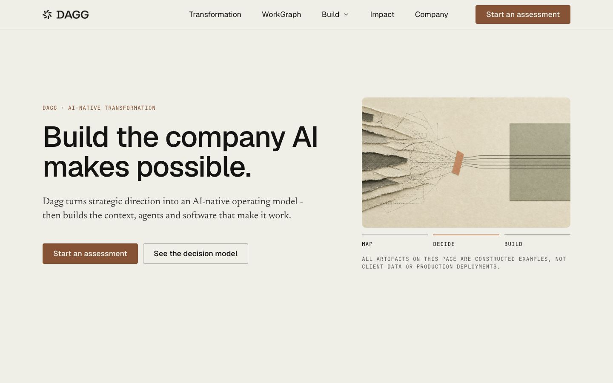
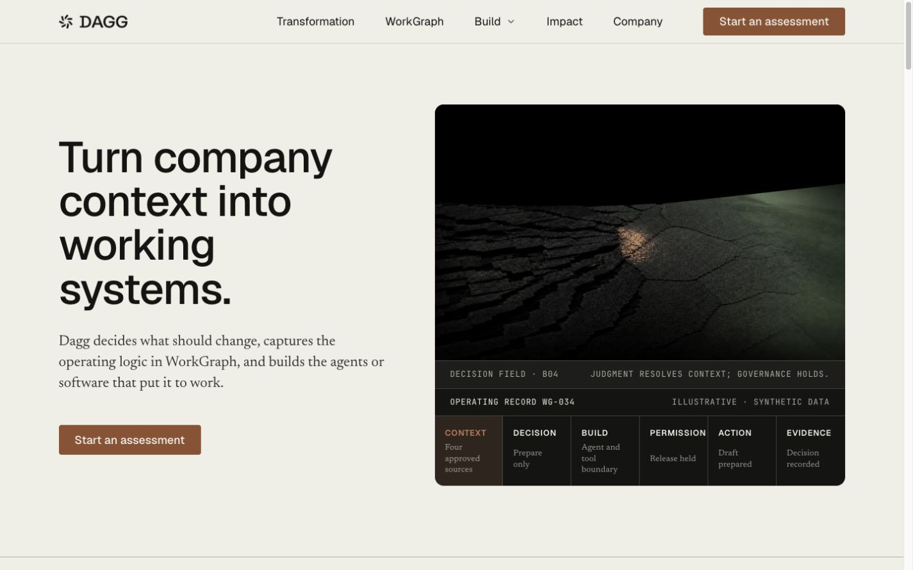
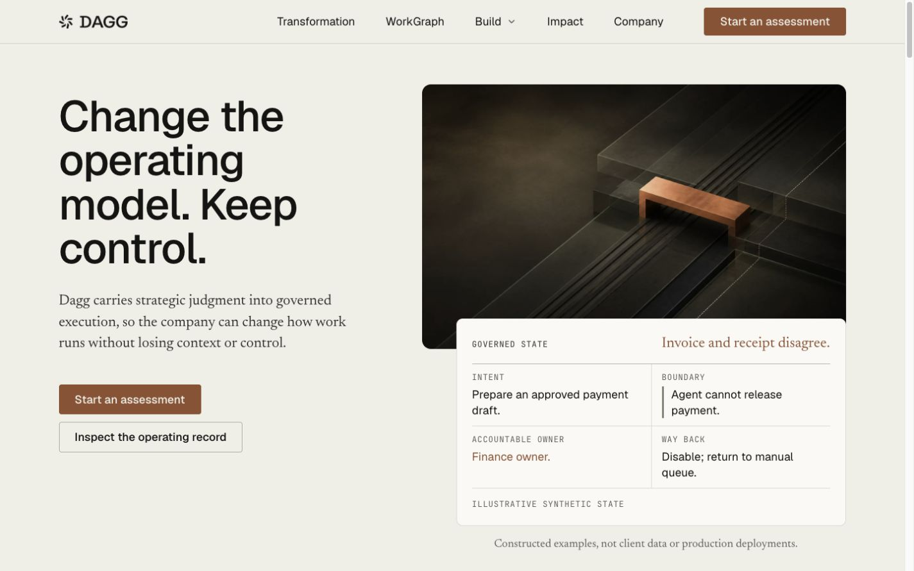

Equal-viewport comparison
Current peer captures and the three resolved Dagg Home directions, all inspected from the same first-screen perspective. This is review evidence, not a public route.





Current peer captures and the three resolved Dagg Home directions, all inspected from the same first-screen perspective. This is review evidence, not a public route.


